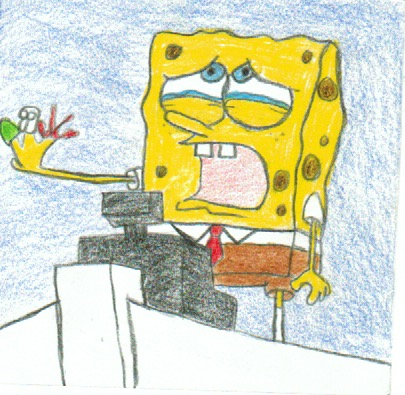
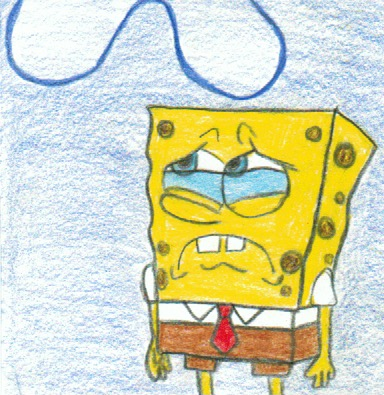
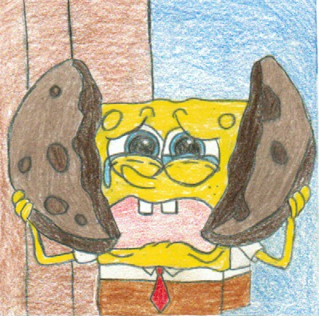
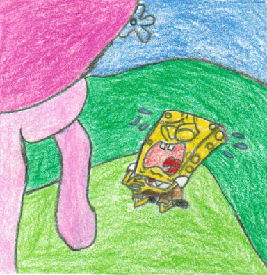
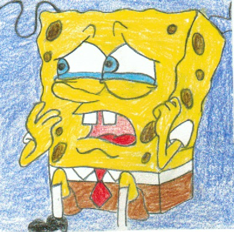
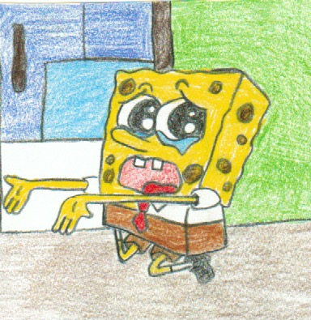
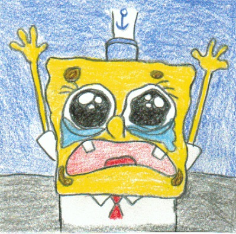

1 / 7

Febuary 17th 2001 - Wormy
Sandy gives Spongebob and Patrick a pet named Wormy, and overnight wormy turns into a butterfly. When SpongeBob and Patrick realize that Wormy is gone and the butterfly has eaten Wormy, they start to freak out.
2 / 7

March 5th 2001 - Dumped
This episode highlights the moment when Gary starts to like Patrick and he makes Spongebob feel bad. SpongeBob feels sad his pet Gary and Patrick are hanging out together and bonding without him.
3 / 7

March 6th 2001 - Grandma Kisses
Spongebob visits his lovely grandma, he has a wonderful time spending the day with her, just as he leaves for work Grandma gives him a sweet kiss on his forehead. When he gets to work he is embarrassed by the lipstick mark left by the kiss.
4/ 7

March 7th 2001 - I'm Your Biggest Fanatic
Spongebob and Patrick spend their day at the Jellyfish convention, seeing all the cool items. Then there is a test to see who the biggest fans are, and the host Kevin puts Spongebob to the test. He ends up facing a jellyfish king and trying to save the Bikini bottom.
5/ 7

May 5th 2001 - Life of Crime
Spongebob and Patrick learn about how borrowing works and they borrow a ballon from someone. But the balloon pops and they have to find a way to pay it back.
6/ 7

September 21st 2001 - Artist Unknown
Squidward has always had eyes on the arts and he finally gets a job at the rec center. He sees that Spongebob is his only student, and he yells at Spongebob and tells him how to make art. Later on, an art collector takes an interest in a state Spongebob made.
7/ 7

October 12th 2001 - Squid on strike
Mr.Krabs is always about keeping the money to himself so when Squid is fed up with Mr, krabs's greedy behavior he decides to go on a strike and persuades Spongebob to stand with him.
❮
❯